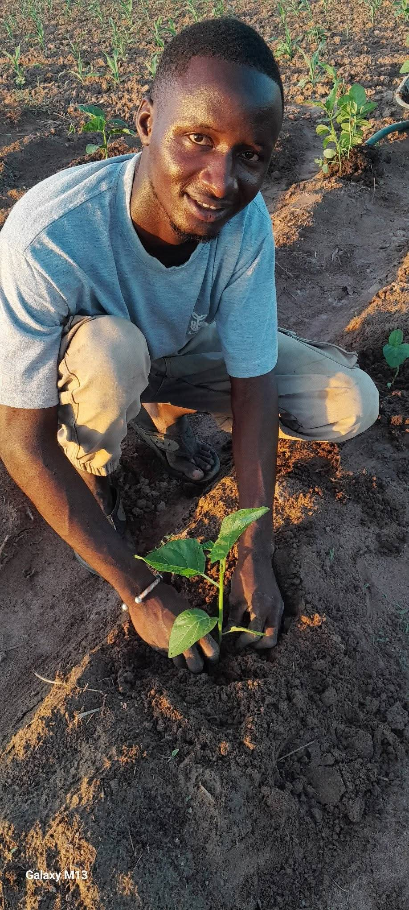

Qui nous sommes

Salif accompagne les producteurs de Vélingara et environs sur le terrain : visite des champs, diagnostic, conseils techniques adaptés à chaque exploitation.
L'approche est simple : aller sur place, regarder ce qui pousse et ce qui bloque, puis proposer des solutions concrètes en maraîchage, pépinière et irrigation, plutôt que des recommandations génériques.
Chaque producteur a son sol, son eau, ses contraintes. Le suivi se construit avec lui, visite après visite.